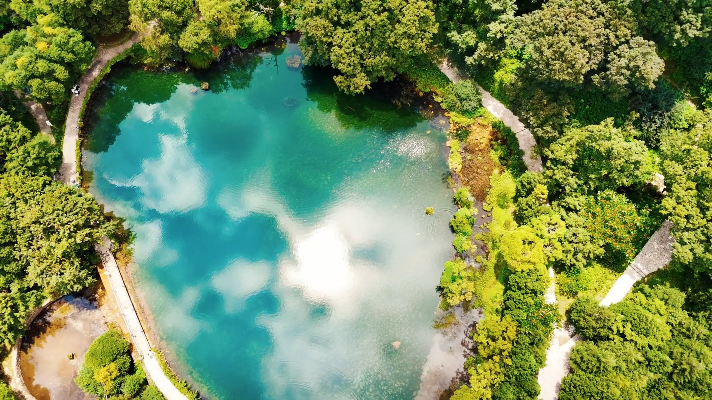
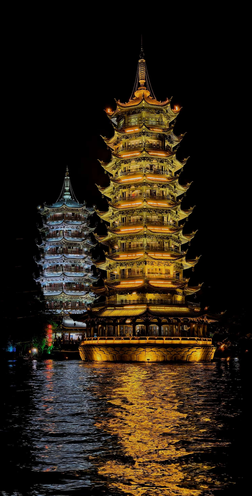
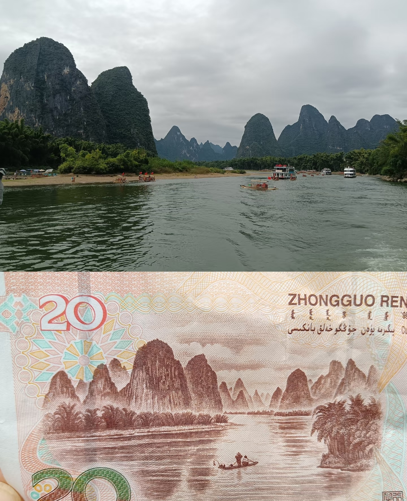

这里记录着我走过的山川湖海，从雪山脚下的风到海边落日的余晖，每一段旅程都藏着独一无二的故事。
逃离城市的喧嚣，奔赴自然与远方，用脚步丈量世界，用镜头收藏风景，用文字留住旅途的温度与感动。
藏在高原深处的雪山湖泊，湖水澄澈如宝石，倒映着连绵雪峰，清晨的雾气让这里宛如仙境。

虎跳峡位于云南，金沙江穿峡，两雪山对峙，以雄奇险峻闻名，是世界级深谷

安溪清水岩，北宋千年古寺，"帝" 字形建筑，清水祖师祖庭，誉称蓬莱仙境